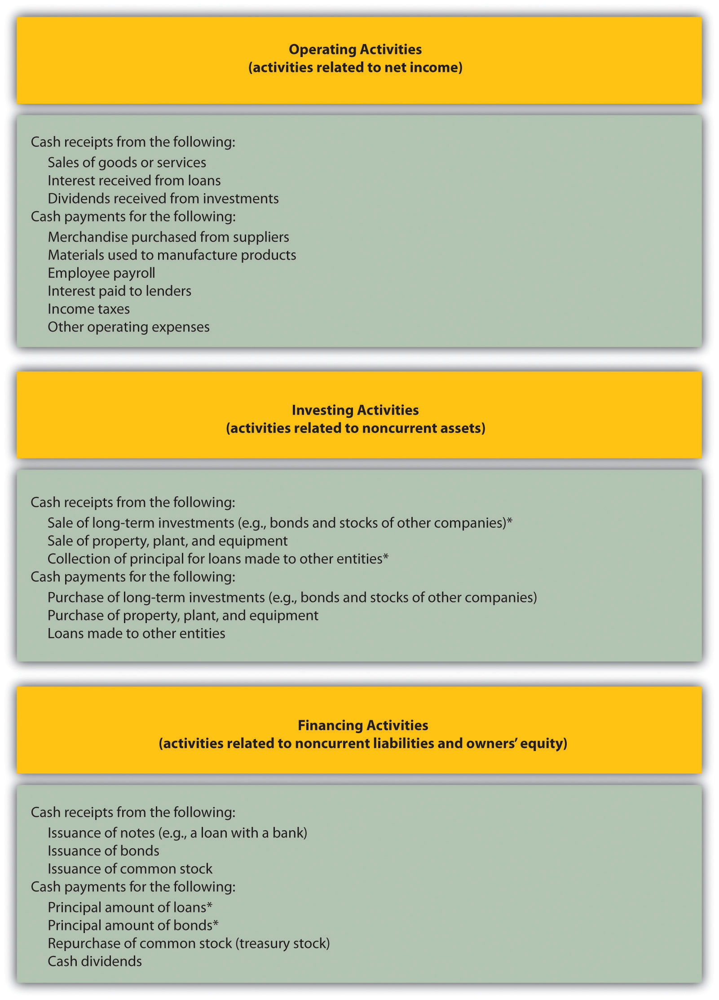
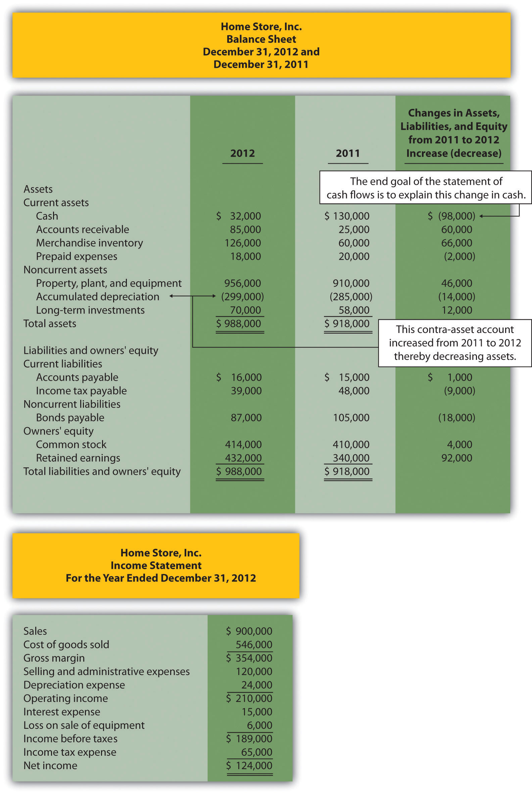
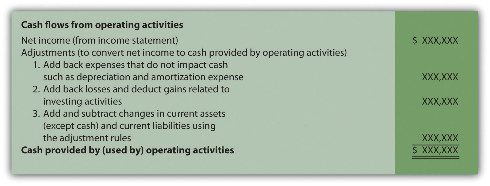
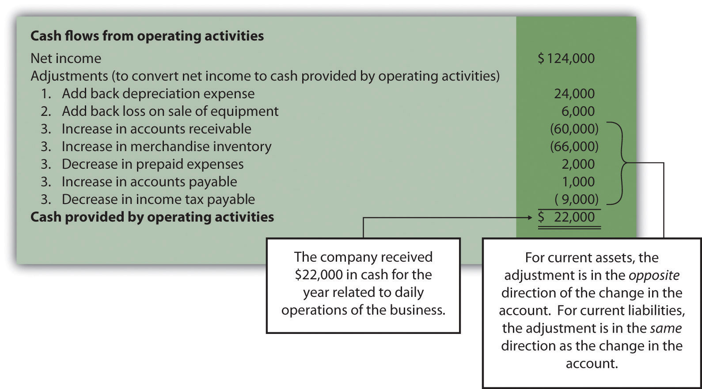
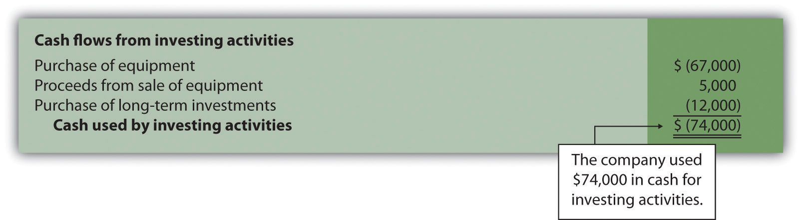
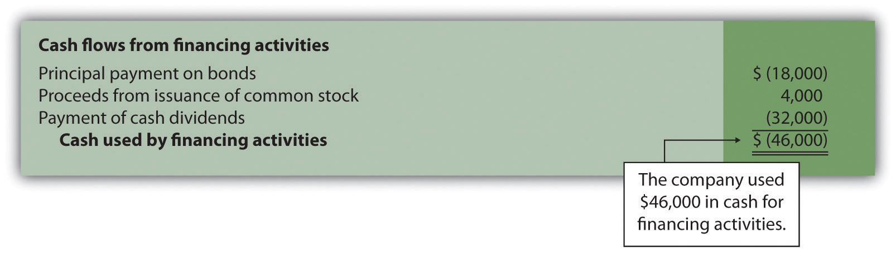
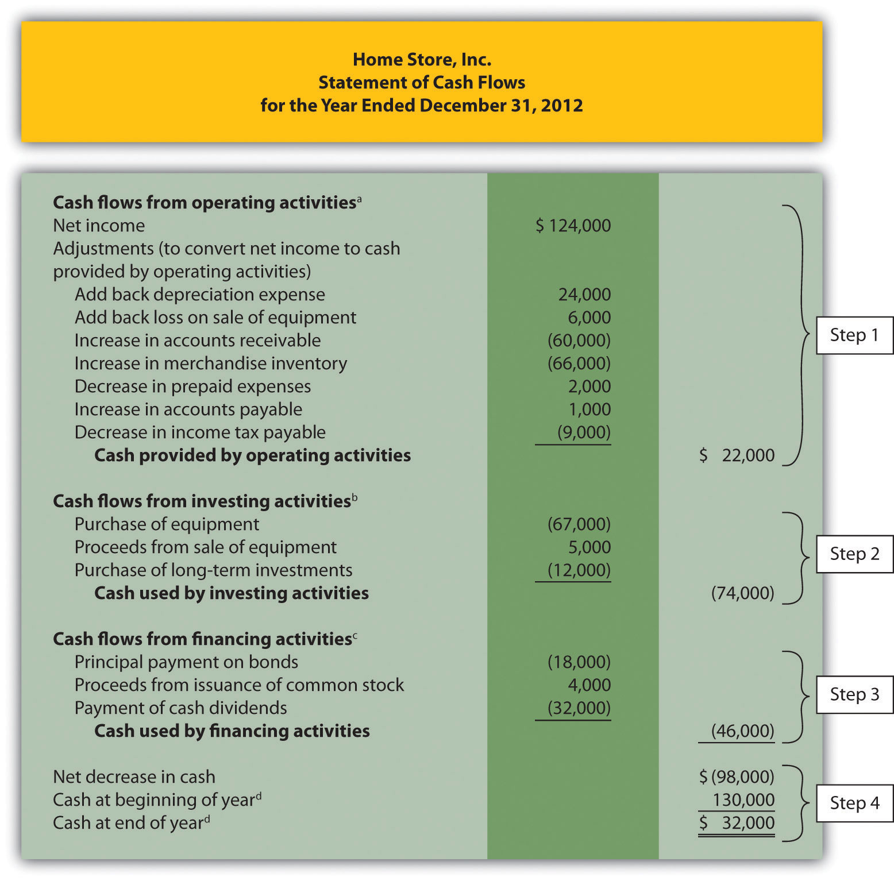
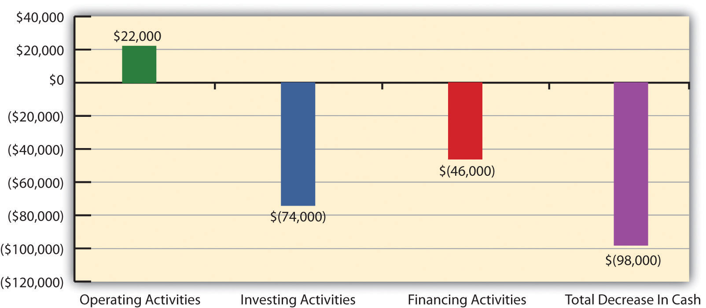

John Huston, CEO and founder of Home Store, Inc., has reviewed the company’s income statement and balance sheet for the most recent fiscal year ended December 31, 2012. Home Store has grown rapidly this past year, with sales and net income showing significant gains compared to 2011. Although John is satisfied with the increase in profitability, he notices a significant decline in cash. John decides to pursue this with Linda Nash (CFO) and Steve Bauer (treasurer) in their weekly meeting:
| John: | I just received the income statement and balance sheet for 2012. Profits look great, but our cash position seems to have deteriorated. We had $130,000 in cash to start the year and ended with only $32,000. I noticed cash was declining throughout the year when I reviewed our monthly financial statements, but I’m concerned about how far our cash balance has dropped. |
| Steve: | You’re right, John. We encountered cash flow problems several times throughout the year in spite of increased sales and profits. On several occasions, I had to delay payments to creditors because of cash flow issues. |
| John: | Seems to me we shouldn’t have this problem. Where is our cash going? |
| Linda: | Good question. Let me round up our cash flow information for the year. I’ll have something for you by next week. |
| John: | Great! I’d like to start next week’s meeting by discussing how much cash we generated in 2012 from our daily operations. I realize net income is shown on an accrual basis, but I’d like to know how much net income was received in the form of cash. |
| Linda: | No problem. I’ll have it for you next week. |
Home Store, Inc., has cash flow problems that are common to many fast growing companies. Although the income statement and balance sheet provide important information concerning financial performance and financial condition, neither statement provides information regarding cash activity for a period of time. The focus of this chapter is on preparing a statement that provides cash flow information. This statement is appropriately called the statement of cash flows.
Question: Most organizations prepare four financial statements for external reporting purposes: income statement, balance sheet, statement of owners’ equity, and statement of cash flows. Financial accounting courses cover the first three statements in detail and often provide an overview of the statement of cash flows. This chapter will focus on preparing the statement of cash flows and on using the resulting cash flow information for analytical purposes. What information is provided in the statement of cash flows?
Answer: The statement of cash flowsA financial statement that provides cash receipt and cash payment information and explains the change in cash for a period of time. provides cash receipt and cash payment information and reconciles the change in cash for a period of time. Cash receipts and cash payments are summarized and categorized as operating, investing, or financing activities. Simply put, the statement of cash flows indicates where cash came from and where cash went for a period of time.
Assume you keep track of your individual cash transactions for an entire year in a check register (e.g., checks written and paycheck deposits) and suppose you have hundreds of transactions for the year. Rather than showing every single transaction in a formal report, the statement of cash flows summarizes these transactions. For example, all cash receipts from paychecks are added together and shown as one line item, all cash payments for rent are added together and shown as one line item, all cash payments for food are added together and shown as one line item, and so on. The goal is to start with the beginning of the year cash balance, add all cash receipts for the year, subtract all cash payments for the year, and find the resulting end-of-year cash balance. Although the formal statement of cash flows is not quite this simple, the concept is the same.
Question: Why did the Financial Accounting Standards Board (FASB) create the statement of cash flows in 1987?
Answer: The statement of cash flows was created due to a lack of cash flow information on the income statement, balance sheet, and statement of owners’ equity. The income statement shows revenues and expenses using the accrual basis of accounting, but it does not indicate how much cash was received for revenues or paid for expenses. The balance sheet shows assets, liabilities, and owners’ equity at a point in time, but it does not show how much cash was received or paid for these items. The only cash information provided on these statements is the change in cash from the end of last period to the end of the current period derived from the cash line item on the balance sheet (often called cash and cash equivalents).
Owners, creditors, and managers wanted more cash flow information. They often asked such questions as: Why did cash go down? How much cash was received related to net income? How much cash was paid for the purchase of equipment? How much cash was received from issuing bonds? As a result of the demand for more cash flow information, the FASB formally created the statement of cash flows in 1987 (Statement of Financial Accounting Standard No. 95, which can be found at http://www.fasb.org). Most companies are now required to prepare the statement of cash flows along with the other three statements. We begin the process of explaining how to prepare this statement in the next section.
Cash Flows at Southwest Airlines
Southwest Airlines was in the enviable position of generating $1,600,000,000 in cash from operating activities for the year ended December 31, 2010. However, cash on the balance sheet only increased $147,000,000 for the same period. Why did total cash go up by such a small amount compared to the $1,600,000,000 increase in cash from operating activities? The statement of cash flows provides the information necessary to answer this question. Southwest spent $493,000,000 on property and equipment (planes, parts, etc.) and $155,000,000 to pay off long-term debt. Southwest also purchased $772,000,000 in short-term investments.
Source: Southwest Airlines, “2010 Annual Report,” http://www.southwest.com.
Solution to Review Problem 12.1
Question: What are the three types of cash flows presented on the statement of cash flows?
Answer: Cash flows are classified as operating, investing, or financing activities on the statement of cash flows, depending on the nature of the transaction. Each of these three classifications is defined as follows.
Figure 12.1 "Examples of Cash Flows from Operating, Investing, and Financing Activities" shows examples of cash flow activities that generate cash or require cash outflows within a period. Figure 12.2 "Examples of Cash Flow Activity by Category" presents a more comprehensive list of examples of items typically included in operating, investing, and financing sections of the statement of cash flows.
Figure 12.2 Examples of Cash Flow Activity by Category
*Receipts of cash for dividends from investments and for interest on loans made to other entities are included in operating activities since both items relate to net income. Likewise, payments of cash for interest on loans with a bank or on bonds issued are also included in operating activities because these items also relate to net income.
Question: Which section of the statement of cash flows is regarded by most financial experts to be most important?
Answer: The operating activities section of the statement of cash flows is generally regarded as the most important section since it provides cash flow information related to the daily operations of the business. This section answers the question, “how much cash did we generate from the daily activities of our core business?” Owners, creditors, and managers are most interested in cash flow generated from daily activities rather than from a one-time issuance of stock or a one-time sale of land. The operating activities section allows stakeholders to assess the ongoing viability of the company. We discuss how to use cash flow information to evaluate organizations later in the chapter.
Cash Activity at Home Depot and Lowe’s
The Home Depot. Inc., and Lowe’s Companies, Inc., are large home improvement retail companies with stores throughout North America. A review of the statements of cash flows for both companies reveals the following cash activity. Positive amounts are cash inflows, and negative amounts are cash outflows.
Amounts are in millions.
This information shows both companies generated significant amounts of cash from daily operating activities; $4,600,000,000 for The Home Depot and $3,900,000,000 for Lowe’s. It is interesting to note both companies spent significant amounts of cash to acquire property and equipment and long-term investments as reflected in the negative investing activities amounts. For both companies, a significant amount of cash outflows from financing activities were for the repurchase of common stock. Apparently, both companies chose to return cash to owners by repurchasing stock.
Source: The Home Depot Inc., “2010 Annual Report,” http://www.homedepot.com; Lowe’s Companies Inc., “2010 Annual Report,” http://www.lowes.com.
Identify whether each of the following items would appear in the operating, investing, or financing activities section of the statement of cash flows. Explain your answer for each item.
Solution to Review Problem 12.2
Question: Recall from your financial accounting course that the accrual basis of accounting recognizes revenue when earned and expenses when incurred, regardless of when cash is exchanged. Conversely, the cash basis of accounting recognizes revenue when cash is received and expenses when cash is paid, regardless of when goods or services are exchanged. The income statement, balance sheet, and statement of owners’ equity are all created using the accrual basis of accounting. However, the statement of cash flows is based on cash flows only, and thus adjustments must be made to convert accrual basis information to a cash basis. What information is necessary to make these adjustments?
Answer: Several pieces of information are required to make these adjustments in preparing the statement of cash flows:
Question: With this information in hand, four steps are required to prepare the statement of cash flows. What are these four steps?
Answer: The four steps required to prepare the statement of cash flows are described as follows:
Step 1. Prepare the operating activities section by converting net income from an accrual basis to a cash basis.
This step can be done using one of two methods—the direct method or the indirect method. Because more than 98 percent of companies surveyed use the indirect method (see Note 12.15 "Business in Action 12.3"), we will use the indirect method throughout this chapter. The appendix describes the direct method.
The indirect methodA statement of cash flows method that begins with net income from the income statement and makes several adjustments related to changes in current assets, current liabilities, and other items to arrive at cash provided by (used by) operating activities. begins with net income from the income statement and makes several adjustments related to changes in current assets, current liabilities, and other items to arrive at cash provided by operating activities (or used by operating activities if the result is a cash outflow). Cash provided by operating activities represents net income on a cash basis. It tells the reader how much cash was received from the daily operations of the business.
Step 2. Prepare the investing activities section by presenting cash activity for noncurrent assets.
This step focuses on the effect changes in noncurrent assets have on cash. Noncurrent asset balances found on the balance sheet, coupled with other information (e.g., cash proceeds from sale of equipment) are used to perform this step.
Step 3. Prepare the financing activities section by presenting cash activity for noncurrent liabilities and owners’ equity.
This step focuses on the effect changes in noncurrent liabilities and owners’ equity have on cash. Noncurrent liabilities and owners’ equity balances found on the balance sheet, coupled with other information (e.g., cash dividends paid) are used to perform this step.
Step 4. Reconcile the change in cash.
Each section of the statement of cash flows described in steps 1, 2, and 3, will show the total cash provided by (increase) or used by (decrease) the activity. Step 4 simply confirms that the net of these changes equates to the change in cash on the balance sheet.
For example, assume the balance sheet shows cash totaled $100 at the end of last year and $140 at the end of the current year. Thus cash increased $40 over the course of the current year. Step 4 reconciles this change with the changes shown in the three sections of the statement of cash flows. Suppose operating activities provided cash of $170, investing activities used cash of $160, and financing activities provided cash of $30. These 3 amounts netted together reconcile to the $40 increase in cash shown on the balance sheet (= $170 − $160 + $30).
Indirect Method Is Most Popular
Most companies prefer to use the indirect method to prepare the operating activities section of the statement of cash flows. A survey taken in 2001 showed more than 98 percent of the 600 companies surveyed used the indirect method. Reasons for this preference vary, but several possibilities are as follows:
Source: American Institute of Certified Accountants, Accounting Trends and Techniques (Washington, D.C.: American Institute of Certified Public Accountants, 2001).
The four steps required to prepare the statement of cash flows are described as follows:
Step 1. Prepare the operating activities section by converting net income from an accrual basis to a cash basis.
Step 2. Prepare the investing activities section by presenting cash activities for noncurrent assets.
Step 3. Prepare the financing activities section by presenting cash activities for noncurrent liabilities and owners’ equity.
Step 4. Reconcile the change in cash from the beginning of the period to the end of the period.
Describe the four steps necessary to prepare the statement of cash flows.
Solution to Review Problem 12.3
The four steps required to prepare the statement of cash flows are as follows:
Step 1. Prepare the operating activities section by converting net income from an accrual basis to a cash basis.
This step starts with net income on an accrual basis (from the income statement) and makes adjustments related to changes in current assets, current liabilities, and other items to find net income on a cash basis. The resulting cash basis net income is called cash provided by operating activities.
Step 2. Prepare the investing activities section by presenting cash activity for noncurrent assets.
This step focuses on the effect changes in noncurrent assets have on cash.
Step 3. Prepare the financing activities section by presenting cash activity for noncurrent liabilities and owners’ equity.
This step focuses on the effect changes in noncurrent liabilities and owners’ equity have on cash.
Step 4. Reconcile the change in cash.
Each section of the statement of cash flows described in steps 1, 2, and 3 will show the total cash provided by or used by each activity. Step 4 confirms that the net of these changes equates to the change in cash derived from the balance sheet.
Question: Now that you are familiar with the four key steps, let’s take a look at the statement of cash flows for Home Store, Inc. Where do we start in preparing Home Store, Inc.’s statement of cash flows?
Answer: As stated earlier, the information needed to prepare the statement of cash flows includes the balance sheet, income statement, and other selected data. This information is presented in Figure 12.3 "Balance Sheet and Income Statement for Home Store, Inc.". Other pertinent data for 2012 are as follows:
With these data and the information provided in Figure 12.3 "Balance Sheet and Income Statement for Home Store, Inc.", we can start preparing the statement of cash flows. It is important to note that all positive amounts shown in the statement of cash flows denote an increase in cash, and all negative amounts denote a decrease in cash.
Figure 12.3 Balance Sheet and Income Statement for Home Store, Inc.
Question: We will be using the indirect method to prepare the operating activities section. (The direct method is covered in the appendix.) The starting point using the indirect method is net income. Home Store, Inc., had net income of $124,000 in 2012. This amount comes from the income statement, which was prepared using the accrual basis of accounting. How do we convert this amount to a cash basis?
Answer: Several adjustments are necessary to convert this amount to a cash basis and to provide an amount related only to daily operating activities of the business. If the resulting adjusted amount is a cash inflow, it is called cash provided by operating activities; if it is a cash outflow, it is called cash used by operating activities.
Three general types of adjustments are necessary to convert net income to cash provided by operating activities. These three types of adjustments are shown in Figure 12.4 "Operating Activities Format and Adjustments", which also displays the format used for the operating activities section of the statement of cash flows. Examine this figure carefully.
Figure 12.4 Operating Activities Format and Adjustments
Question: What is the first type of adjustment necessary to convert net income to a cash basis?
Answer: The first adjustment to net income involves adding back expenses that do not affect cash (often called noncash expenses). For example, the accrual basis of accounting deducts depreciation expense in calculating net income, even though depreciation expense does not involve cash. (Recall the financial accounting entry to record depreciation expense: debit depreciation expense and credit accumulated depreciation. Notice cash is not involved.) Thus to convert net income to a cash basis, depreciation expense is added back to net income. In effect, we are reversing depreciation expense because it is not an expense using the cash basis of accounting. The end result is as though depreciation expense was never deducted as an expense.
Next, we show how the first adjustment to net income appears in the operating activities section of the statement of cash flows for Home Store, Inc. (net income and depreciation expense come from the income statement shown in Figure 12.3 "Balance Sheet and Income Statement for Home Store, Inc."):
The income statement for Home Store, Inc., shows $24,000 in depreciation expense for the year. As shown previously, this amount is added back to the net income of $124,000.
Question: What is the second type of adjustment necessary to convert net income to a cash basis?
Answer: The second adjustment to net income involves adding back losses and deducting gains related to investing activities. For example, Home Store, Inc., realized a $6,000 loss on the sale of equipment. This loss is shown on the income statement as a deduction in calculating net income (see Figure 12.3 "Balance Sheet and Income Statement for Home Store, Inc."). However, this loss is not related to the daily operations of the business. That is, Home Store, Inc., is not in the business of buying and selling equipment daily. Remember, we are trying to find the cash provided by operating activities in this section of the statement of cash flows.
Since equipment is a noncurrent asset, cash activity related to the disposal of equipment should be included in the investment activities section of the statement of cash flows. Thus the $6,000 loss shown as a deduction on the income statement is added back to net income, and it will be included later in the investing activities section as part of the proceeds from the sale of equipment. In effect, we are reversing the $6,000 loss because it is not an operating expense.
Here’s how the second adjustment to net income appears in the operating activities section of the statement of cash flows for Home Store, Inc.:
Question: What is the third type of adjustment necessary to convert net income to a cash basis?
Answer: The third type of adjustment to net income involves analyzing the changes in all current assets (except cash) and current liabilities from the beginning of the period to the end of the period. These changes are already shown in the far right column of the balance sheet portion of Figure 12.3 "Balance Sheet and Income Statement for Home Store, Inc.". Two important rules must be followed to determine how the change is reflected as an adjustment to net income. Study these two rules carefully:
Now let’s work through each current asset and current liability line item shown in the balance sheet (Figure 12.3 "Balance Sheet and Income Statement for Home Store, Inc.") and use these rules to determine how each item fits into the operating activities section as an adjustment to net income.
The first current asset line item, cash, shows the change in cash from the beginning of the year to the end of year. Cash decreased by $98,000. The goal of the statement of cash flows is to show what caused this $98,000 decrease. This amount will appear in step 4 when we reconcile the beginning cash balance to the ending cash balance. The next line item is accounts receivable.
Accounts receivable (current asset) increased by $60,000. The current asset rule states that increases in current assets are deducted from net income. Thus $60,000 is deducted from net income in the operating activities section of the statement of cash flows. Here’s why.
Assume all Home Store’s sales shown on the income statement are credit sales (each sale required a debit to accounts receivable and a credit to sales). The beginning accounts receivable balance of $25,000 is increased by $900,000 for credit sales made during the year, resulting in $925,000 in total receivables to be collected. Since $85,000 in accounts receivable remains at the end of the year, $840,000 in cash was collected (= $925,000 − $85,000). On a cash basis, Home Store, Inc., should show $840,000 in revenue rather than $900,000. Thus net income must be reduced by $60,000 (= $900,000 revenue using accrual basis − $840,000 revenue using cash basis). The accounts receivable T-account shown in the following provides further clarification.
Here’s how the accounts receivable adjustment to net income appears in the operating activities section of the statement of cash flows for Home Store, Inc.:
We will continue analyzing each current asset and current liability item in the balance sheet shown in Figure 12.3 "Balance Sheet and Income Statement for Home Store, Inc." and present the resulting adjustments and completed operating activities section at the end of our analysis in Figure 12.5 "Operating Activities Section of Statement of Cash Flows (Home Store, Inc.)".
Merchandise inventory (current asset) increased by $66,000. Because the current asset rule states that increases in current assets are deducted from net income, $66,000 is deducted from net income in the operating activities section of the statement of cash flows. To explain why, let’s assume Home Store, Inc., pays cash for all purchases of merchandise inventory. If the merchandise inventory account increases over time, more goods are purchased than are sold. Because merchandise inventory at Home Store, Inc., increased $66,000 and cost of goods sold totaled $546,000 (as shown in Figure 12.3 "Balance Sheet and Income Statement for Home Store, Inc."), the company must have purchased inventory with a cost of $612,000 during the period (= $66,000 + $546,000). Thus more cash was paid for merchandise ($612,000) than was reflected on the income statement as cost of goods sold ($546,000). If expenses are higher using a cash basis, the adjustment must decrease net income. Therefore $66,000 is deducted from net income in the operating activities section of the statement of cash flows. This information is summarized in the merchandise inventory T-account in the following.
Prepaid expenses (current asset) decreased by $2,000. Because the current asset rule states that decreases in current assets are added to net income, $2,000 is added to net income in the operating activities section of the statement of cash flows. This is because cash paid for these expenses was lower than the expenses recognized on the income statement using the accrual basis. Since expenses are $2,000 lower using the cash basis, net income must be increased by $2,000.
Important Current Asset Rule
When preparing the operating activities section of the statement of cash flows, increases in current assets are deducted from net income; decreases in current assets are added to net income.
Question: Now that we know how to handle the change in current assets when preparing the operating activities section of the statement of cash flows, what do we do with current liabilities?
Answer: The current liability rule is a bit different than the current asset rule as described next.
Accounts payable (current liability) increased by $1,000. Because the current liability rule states that increases in current liabilities are added to net income, $1,000 is added to net income in the operating activities section of the statement of cash flows. An increase in accounts payable signifies that Home Store, Inc., recorded more as an expense on the income statement (accrual basis) than the company paid in cash (cash basis). Since expenses are lower using the cash basis, net income must be increased by $1,000.
Income tax payable (current liability) decreased by $9,000. Because the current liability rule states that decreases in current liabilities are deducted from net income, $9,000 is deducted from net income in the operating activities section of the statement of cash flows. A decrease in income tax payable signifies that Home Store, Inc., paid more for income taxes (cash basis) than the company recorded as an expense on the income statement (accrual basis). Since expenses are higher using the cash basis, net income must be decreased by $9,000.
Important Current Liability Rule
When preparing the operating activities section of the statement of cash flows, increases in current liabilities are added to net income; decreases in current liabilities are deducted from net income.
Question: What does the operating activities section of the statement of cash flows look like for Home Store, Inc.?
Answer: Figure 12.5 "Operating Activities Section of Statement of Cash Flows (Home Store, Inc.)" shows the completed operating activities section of the statement of cash flows for Home Store. Inc. The most important line is at the bottom, which shows cash of $22,000 was generated during the year from daily operations of the business. Notice this amount is significantly lower than the net income amount of $124,000 reported on the income statement. Study Figure 12.5 "Operating Activities Section of Statement of Cash Flows (Home Store, Inc.)" carefully noting the three types of adjustments made to net income.
Figure 12.5 Operating Activities Section of Statement of Cash Flows (Home Store, Inc.)
Note 12.21 "Review Problem 12.4" through Note 12.25 "Review Problem 12.7" will use the data presented as follows for Phantom Books. Each review problem corresponds to the four steps required to prepare a statement of cash flows.
Phantom Books is a retail store that sells new and used books. Phantom’s most recent balance sheet, income statement, and other important information for 2012 are presented in the following.
Additional data for 2012 include the following:
Solution to Review Problem 12.4
Start with net income from the income statement; make the appropriate adjustments for (1) noncash expenses, such as depreciation and amortization; (2) gains and losses related to investing activities; and (3) changes in current assets other than cash and current liabilities. The operating activities section of the statement of cash flows for Phantom Books appears as follows.
Before moving on to step 2, note that investing and financing activities sections always use the same format whether the operating activities section is presented using the direct method or indirect method.
Question: Now that we have completed the operating activities section for Home Store, Inc., the next step is to prepare the investing activities section. What information is used for this section, and how is it prepared?
Answer: The investing activities section of the statement of cash flows focuses on cash activities related to noncurrent assets. Review the noncurrent asset section of Home Store, Inc.’s balance sheet presented in Figure 12.3 "Balance Sheet and Income Statement for Home Store, Inc.". Three noncurrent asset line items must be analyzed to determine how to present cash flow information in the investing activities section.
Property, plant, and equipment increased by $46,000. The additional information provided for 2012 indicates two types of transactions caused this increase. First, the company purchased equipment for $67,000 cash. Home Store, Inc., made the following journal entry for this transaction:
Second, the company sold equipment for $5,000 cash (often called a disposal of equipment). This equipment was on the books at an original cost of $21,000 with accumulated depreciation of $10,000. Home Store, Inc., made the following journal entry for this transaction:
Notice the two entries to property, plant, and equipment shown previously. The net effect of these 2 entries is an increase of $46,000 (= $67,000 − $21,000). This is summarized in the following T-account:
Question: How is this property, plant, and equipment information used in the investing activities section of the statement of cash flows for Home Store, Inc.?
Answer: First, the purchase of equipment for $67,000 cash is shown as a decrease in cash. Second, the sale of equipment for $5,000 is shown as an increase in cash. It is not enough to simply show a cash outflow of $62,000 in the investing activities section of the statement of cash flows (= $67,000 − $5,000). Instead, Home Store, Inc., must show the components of this cash outflow as separate line items in the statement of cash flows as required by U.S. GAAP. The formal presentation of this information in the investing activities section is shown later in Figure 12.6 "Investing Activities Section of Statement of Cash Flows (Home Store, Inc.)".
Accumulated depreciation decreased noncurrent assets by $14,000. This contra asset account is not typical of the other asset accounts shown on Home Store, Inc.’s balance sheet since contra asset accounts have the effect of reducing assets. Thus as this accumulated depreciation account increases, it further reduces overall assets. Terminology can get confusing, so here is a simple way to look at it. The higher the account goes; the more it reduces assets. This is why the change column shows this account as decreasing assets.
Two items caused the change in the accumulated depreciation account. First, the sale of equipment during the year caused the company to take $10,000 in accumulated depreciation off the books. Second, $24,000 in depreciation expense was recorded during the year (with a corresponding entry to accumulated depreciation). This information is summarized in the following T-account:
Question: How is accumulated depreciation information used in the statement of cash flows for Home Store, Inc.?
Answer: This information is already reflected in two places (the work has already been done!). First, depreciation expense is a noncash expense and is added back to net income in the operating activities section of the statement of cash flows (see Figure 12.5 "Operating Activities Section of Statement of Cash Flows (Home Store, Inc.)"). Second, $10,000 of accumulated depreciation related to disposals is included as part of the $5,000 proceeds from the sale of equipment in the investing activities section of the statement of cash flows (see Figure 12.6 "Investing Activities Section of Statement of Cash Flows (Home Store, Inc.)"). Here are the components of the equipment sale that support the $5,000 in cash proceeds shown in the investing activities section:
Long-term investments increased by $12,000. The additional information provided for 2012 indicates there were no sales of long-term investments during the year. The increase of $12,000 is solely from purchasing long-term investments with cash. Thus the purchase of long-term investments for $12,000 is shown as a decrease in cash in the investing activities section.
Figure 12.6 "Investing Activities Section of Statement of Cash Flows (Home Store, Inc.)" shows the three investing activities described previously: (1) a $67,000 decrease in cash from the purchase of equipment, (2) a $5,000 increase in cash from the sale of equipment, and (3) a $12,000 decrease in cash from the purchase of long-term investments. Examine Figure 12.6 "Investing Activities Section of Statement of Cash Flows (Home Store, Inc.)" carefully noting the impact these three items have on cash and the resulting cash used by investing activities of $74,000.
Figure 12.6 Investing Activities Section of Statement of Cash Flows (Home Store, Inc.)
Using the information presented in Note 12.21 "Review Problem 12.4":
Solution to Review Problem 12.5
Start by analyzing changes in noncurrent assets on the balance sheet. Then prepare the investing activities section of the statement of cash flows. The cash flows related to each noncurrent asset account are underlined as follows.
Property, plant, and equipment decreased by $3,000. Additional data provided indicate 2 items caused this change: (1) equipment was purchased for $27,000 cash, causing a $27,000 increase in the account; and (2) equipment with an original cost of $30,000 was sold for $12,000 cash, causing a $30,000 decrease in the account. The net effect of these 2 items on the property, plant, and equipment account is a decrease of $3,000 (= $27,000 purchase − $30,000 original cost of equipment sold). The impact these items have on cash is reflected in the investing activities section of the statement of cash flows by showing a $27,000 cash outflow for the purchase of equipment and a $12,000 cash inflow from the sale of equipment.
Accumulated depreciation decreased assets by $7,000. Two items caused this change: (1) the sale of equipment caused the company to take $22,000 in accumulated depreciation off the books—this was the accumulated depreciation on the books for the equipment sold, and (2) $29,000 in depreciation expense was recorded during the year, with a corresponding entry to accumulated depreciation. Neither of these entries to accumulated depreciation impacts the investing activities section. However, $29,000 in depreciation expense is a noncash expense and is added back to net income in the operating activities section (see solution to Note 12.21 "Review Problem 12.4").
Long-term investments increased by $14,000. Additional data provided indicate 2 items caused this change: (1) long-term investments with an original cost of $11,000 were sold for $3,000 cash, and (2) long-term investments were purchased for $25,000 cash. The net effect of these 2 items on the long-term investments account is an increase of $14,000 (= $25,000 purchase − $11,000 original cost of investments sold). The impact these items have on cash is reflected in the investing activities section of the statement of cash flows by showing a $25,000 cash outflow for the purchase of investments, and a $3,000 cash inflow from the sale of investments.
The investing activities section of the statement of cash flows for Phantom Books is shown as follows:
Question: Now that we have completed the operating and investing activities sections for Home Store, Inc., the next step is to prepare the financing activities section. What information is used for this section, and how is it prepared?
Answer: The financing activities section of the statement of cash flows focuses on cash activities related to noncurrent liabilities and owners’ equity (i.e., cash activities related to long-term company financing). Review the noncurrent liability and owners’ equity sections of Home Store, Inc.’s balance sheet presented in Figure 12.3 "Balance Sheet and Income Statement for Home Store, Inc.". One noncurrent liability item (bonds payable) and two owners’ equity items (common stock and retained earnings) must be analyzed to determine how to present cash flow information in the financing activities section. The formal presentation of this information in the financing activities section is shown later in Figure 12.7 "Financing Activities Section of Statement of Cash Flows (Home Store, Inc.)".
Bonds payable decreased by $18,000. The additional information provided for 2012 indicates Home Store, Inc., paid off bonds during the year with a principal amount of $18,000. This is reflected in the financing activities section of the statement of cash flows as an $18,000 decrease in cash.
Common stock increased by $4,000. The additional information provided for 2012 indicates the company issued common stock for $4,000 cash. This is reflected in the financing activities section of the statement of cash flows as $4,000 increase in cash.
Retained earnings increased by $92,000. Two items caused this increase: (1) net income of $124,000 increased retained earnings, and (2) cash dividends paid totaling $32,000 decreased retained earnings. The net effect of these two entries is an increase of $92,000 (= $124,000 net income − $32,000 cash dividends).
Question: How is this information used in the statement of cash flows?
Answer: Net income is already included at the top of the operating activities section as shown in Figure 12.5 "Operating Activities Section of Statement of Cash Flows (Home Store, Inc.)". Cash dividends are included in the financing activities section as a $32,000 decrease in cash.
Figure 12.7 "Financing Activities Section of Statement of Cash Flows (Home Store, Inc.)" shows the three financing activities described previously: (1) an $18,000 decrease in cash from paying off the principal amount of bonds, (2) a $4,000 increase in cash from the issuance of common stock, and (3) a $32,000 decrease in cash from the payment of cash dividends. Examine Figure 12.7 "Financing Activities Section of Statement of Cash Flows (Home Store, Inc.)" carefully noting the impact these three items have on cash and the resulting cash used by financing activities of $46,000.
Figure 12.7 Financing Activities Section of Statement of Cash Flows (Home Store, Inc.)
Source: Photo courtesy of Rob Enslin, http://www.flickr.com/photos/doos/6086236471/.
Dividend Payments at Microsoft Corporation
By fiscal year ended June 30, 2004, Microsoft was sitting on more than $60,000,000,000 in cash and short-term investments. After reviewing its options, the company chose to give much of this cash back to shareholders in the form of cash dividends. A one-time increase in cash dividends resulted in $33,500,000,000 paid to the owners of the company during the second quarter of fiscal year 2005 (three months ended December 31, 2004). This information is found in the financing activities section of Microsoft’s statement of cash flows.
Source: Microsoft Corporation, “2004 Annual Report,” http://www.microsoft.com; Microsoft Corporation, “2005 Second Quarter Statement of Cash Flows,” http://www.microsoft.com.
Question: Some organizations have noncash activities involving the exchange of one noncurrent or owners’ equity balance sheet item for another (e.g., the issuance of common stock for a building; or the issuance of common stock in exchange for bonds held by creditors). Do these types of transactions appear in the statement of cash flows?
Answer: These exchanges do not involve cash and thus do not appear directly on the statement of cash flows. However, if the amount is significant, this type of exchange must be disclosed as a separate note below the statement of cash flows or in the notes to the financial statements.
Using the information presented in Note 12.21 "Review Problem 12.4" do the following:
Solution to Review Problem 12.6
Start by analyzing changes in noncurrent liabilities and owners’ equity on the balance sheet. Then prepare the financing activities section of the statement of cash flows. The cash flows related to each noncurrent liability and owners’ equity account are underlined as follows.
Note payable increased by $5,000. Additional data provided indicate the company signed a note with the bank and received $5,000 cash. This is reflected in the financing activities section as a $5,000 cash inflow.
Common stock decreased by $16,000. Additional data provided indicate the company repurchased common stock for $16,000 cash. This is reflected in the financing activities section as a $16,000 cash outflow.
Retained earnings increased by $38,000. Two items caused this increase: (1) net income of $51,000 increased retained earnings and (2) cash dividends paid totaling $13,000 (provided as additional data) decreased retained earnings. The net effect of these 2 items is an increase of $38,000 (= $51,000 net income − $13,000 cash dividends). Net income is already included at the top of the operating activities section as shown in the solution to Note 12.21 "Review Problem 12.4". Cash dividends are included in the financing activities section as a $13,000 cash outflow.
The financing activities section of the statement of cash flows for Phantom Books is shown as follows:
Question: We’re almost done with Home Store, Inc.’s statement of cash flows. What is the fourth and final step needed to complete the statement of cash flows?
Answer: The final step is to show that the change in cash on the statement of cash flows agrees with the change in cash on the balance sheet. As shown at the bottom of the completed statement of cash flows for Home Store, Inc., in Figure 12.8 "Statement of Cash Flows (Home Store, Inc.)", the net decrease in cash of $98,000 shown on this statement (= $22,000 increase from operating activities − $74,000 decrease from investing activities − $46,000 decrease from financing activities) agrees with the change in cash shown on the balance sheet (= $32,000 ending cash balance − $130,000 beginning balance).
Figure 12.8 Statement of Cash Flows (Home Store, Inc.)
a From Figure 12.5 "Operating Activities Section of Statement of Cash Flows (Home Store, Inc.)".
b From Figure 12.6 "Investing Activities Section of Statement of Cash Flows (Home Store, Inc.)".
c From Figure 12.7 "Financing Activities Section of Statement of Cash Flows (Home Store, Inc.)".
d From Figure 12.3 "Balance Sheet and Income Statement for Home Store, Inc.".
Figure 12.9 "Cash Flows at Home Store, Inc." provides a summary of cash flows for operating activities, investing activities, and financing activities for Home Store, Inc., along with the resulting total decrease in cash of $98,000.
Figure 12.9 Cash Flows at Home Store, Inc.
Using the information presented in Note 12.21 "Review Problem 12.4" and the solutions to Note 12.21 "Review Problem 12.4", Note 12.22 "Review Problem 12.5", and Note 12.24 "Review Problem 12.6", prepare a complete statement of cash flows for Phantom Books. Follow the format presented in Figure 12.8 "Statement of Cash Flows (Home Store, Inc.)".
Solution to Review Problem 12.7
a From Note 12.21 "Review Problem 12.4".
b From Note 12.22 "Review Problem 12.5".
c From Note 12.24 "Review Problem 12.6".
Recall the dialogue at Home Store, Inc., between John (CEO), Steve (treasurer), and Linda (CFO). John was concerned about the company’s drop in cash from $130,000 at the beginning of the year to $32,000 at the end of the year. He asked Linda to investigate and wanted to know how much cash was generated from daily operations during the year. The group reconvened the following week. As you read the dialogue that follows, refer to Figure 12.8 "Statement of Cash Flows (Home Store, Inc.)"; it is the statement of cash flows that Linda prepared for the meeting.
| John (CEO): | Welcome, everyone. Linda, what information do you have for us regarding the company’s cash flow? |
| Linda (CFO): | I’ve completed a statement of cash flows for the year—here are copies for your review (see Figure 12.8 "Statement of Cash Flows (Home Store, Inc.)"). This statement tells us about the company’s cash activities during the year and ultimately explains why cash decreased by $98,000. |
| John: | How much cash did we generate from ongoing operations for the year? |
| Linda: | That can be found in the top portion of the statement under “cash flows from operating activities.” We generated $22,000 from operating activities. |
| Steve (Treasurer): | You’re kidding! We had net income totaling $124,000 but only generated $22,000 in cash? |
| John: | That does seem like a huge disparity. Linda, are you sure this is correct? |
| Linda: | Yes! The reason cash from operating activities is so much lower than net income is that accounts receivable and merchandise inventory increased significantly from the beginning of the year to the end of the year. In fact, both accounts more than doubled. |
| Steve: | The cash tied up in these two areas is definitely hurting our cash flow. We really struggled to meet our cash budgets for accounts receivable collections and inventory purchases. |
| John: | Clearly, we’ve got to get a handle on receivables and inventory. But even with this huge difference between net income and cash flows from operating activities, we generated $22,000 in cash. This does not explain why cash decreased by $98,000. |
| Linda: | You’re right, John. Operating activities produced positive cash flow in spite of these receivables and inventory issues. Let’s look further down the statement. Notice we spent $67,000 on equipment and purchased $12,000 in long-term investments. |
| Steve: | Yes, I recall purchasing a new forklift—the old one was a safety hazard—and purchasing long-term investments at the beginning of the year when our cash balance was on the high side. |
| Linda: | Once we factor in the cash proceeds from the old equipment, you can see we spent $74,000 in cash for equipment and investments. |
| John: | Looking back, we probably should have financed the equipment rather than having paid for it all at once. What else can you tell us, Linda? |
| Linda: | Bonds totaling $18,000 came due during the year, as shown toward the bottom of the statement, and we paid $32,000 in dividends. |
| Steve: | I realize the board felt cash levels were high enough during 2011 to warrant a large dividend payment in 2012, but we need to cut way back on these dividends in the future. |
| Linda: | I agree. To answer your question, John, the $98,000 decrease in cash came primarily from the purchase of equipment and long-term investments and payments for bonds and cash dividends. |
| John: | Thank you, Linda. This provides the information we need to improve cash flow going forward. |
As you can see from this dialogue, the statement of cash flows is not only a reporting requirement for most companies, it is also a useful tool for analytical and planning purposes. Next, we will discuss how to use cash flow information to assess performance and help in planning for the future.
Question: Companies and analysts tend to use income statement and balance sheet information to evaluate financial performance. In fact, financial results presented to the investing public typically focus on earnings per share (Chapter 13 "How Do Managers Use Financial and Nonfinancial Performance Measures?" discusses earnings per share in detail). However, analysis of cash flow information is becoming increasingly important to managers, auditors, and outside analysts. What measures are commonly used to evaluate performance related to cash flows?
Answer: Three common cash flow measures used to evaluate organizations are (1) operating cash flow ratio, (2) capital expenditure ratio, and (3) free cash flow. (Further coverage of these measures can be found in the following article: John R. Mills and Jeanne H. Yamamura, “The Power of Cash Flow Ratios,” Journal of Accountancy, October 1998.) We will use two large home improvement retail companies, The Home Depot, Inc., and Lowe’s Companies, Inc., to illustrate these measures.
Question: The operating cash flow ratioA cash flow performance measure calculated as cash provided by operating activities divided by current liabilities. is cash provided by operating activities divided by current liabilities. What does this ratio tell us, and how is it calculated?
Answer: This ratio measures the company’s ability to generate enough cash from daily operations over the course of a year to cover current obligations. Although similar to the commonly used current ratio, this ratio replaces current assets in the numerator with cash provided by operating activities. The operating cash flow ratio is as follows:
The numerator, cash provided by operating activities, comes from the bottom of the operating activities section of the statement of cash flows. The denominator, current liabilities, comes from the liabilities section of the balance sheet. (Note that if current liabilities vary significantly from one period to the next, some analysts prefer to use average current liabilities. We will use ending current liabilities unless noted otherwise.)
As with most financial measures, the resulting ratio must be compared to similar companies in the industry to determine whether the ratio is reasonable. Some industries have a large operating cash flow relative to current liabilities (e.g., mature computer chip makers, such as Intel Corporation), while others do not (e.g., startup medical device companies).
The operating cash flow ratio is calculated for Home Depot and Lowe’s in the following using information from each company’s balance sheet and statement of cash flows.

Home Depot and Lowe’s are in the same industry and have comparable ratios, which is what we would expect for similar companies.
Question: The capital expenditure ratioA cash flow performance measure calculated as cash provided by operating activities divided by capital expenditures. is cash provided by operating activities divided by capital expenditures. What does this ratio tell us, and how is it calculated?
Answer: This ratio measures the company’s ability to generate enough cash from daily operations to cover capital expenditures. A ratio in excess of 1.0, for example, indicates the company was able to generate enough operating cash to cover investments in property, plant, and equipment. The capital expenditure ratio is as follows:
The numerator, cash provided by operating activities, comes from the bottom of the operating activities section of the statement of cash flows. The denominator, capital expenditures, comes from information within the investing activities section of the statement of cash flows.
The capital expenditure ratio is calculated for Home Depot and Lowe’s in the following using information from each company’s statement of cash flows.

Since the capital expenditure ratio for each company is above 1.0, both companies were able to generate enough cash from operating activities to cover investments in property, plant, and equipment (also called fixed assets).
Question: Another measure used to evaluate organizations, called free cash flow, is simply a variation of the capital expenditure ratio described previously. What does this measure tell us, and how is it calculated?
Answer: Rather than using a ratio to determine whether the company generates enough cash from daily operations to cover capital expenditures, free cash flow is measured in dollars. Free cash flowA cash flow performance measure calculated as cash provided by operating activities minus capital expenditures. is cash provided by operating activities minus capital expenditures. The idea is that companies must continue to invest in fixed assets to remain competitive. Free cash flow provides information regarding how much cash generated from daily operations is left over after investing in fixed assets. Many organizations, such as Amazon.com, consider this measure to be one of the most important in evaluating financial performance (see Note 12.34 "Business in Action 12.5"). The free cash flow formula is as follows:
The cash provided by operating activities comes from the bottom of the operating activities section of the statement of cash flows. The capital expenditures amount comes from information within the investing activities section of the statement of cash flows.
The free cash flow amount is calculated for Home Depot and Lowe’s as follows using information from each company’s statement of cash flows.

Because free cash flow for each company is above zero, both companies were able to generate enough cash from operating activities to cover investments in fixed assets and have some left over to invest elsewhere. This conclusion is consistent with the capital expenditure ratio analysis, which uses the same information to assess the company’s ability to cover fixed asset expenditures.
Formulas for the cash flow performance measures presented in this chapter are summarized in Table 12.1 "Summary of Cash Flow Performance Measures".
Table 12.1 Summary of Cash Flow Performance Measures

Source: Photo courtesy of James Duncan Davidson, http://www.flickr.com/photos/oreilly/6629275/
Free Cash Flow at Amazon.com
Amazon.com is an online retailer that began selling books in 1996 and has since expanded into other areas of retail sales. The founder and CEO (Jeff Bezos) believes free cash flow is so important, the annual report included a letter from Mr. Bezos to the shareholders, which began with this statement, “Our ultimate financial measure, and the one we want to drive over the long-term, is free cash flow per share.”
The company justifies this focus on free cash flow by making the point that earnings presented on the income statement do not translate into cash flows, and shares are valued based on the present value of future cash flows. This implies shareholders should be most interested in free cash flow per share rather than earnings per share. Mr. Bezos goes on to state, “Cash flow statements often don’t receive as much attention as they deserve. Discerning investors don’t stop with the income statement.”
Amazon.com’s free cash flow for 2010 totaled $2,164,000,000, compared to $2,880,000,000 in 2009. Net income for 2010 totaled $1,152,000,000, compared to $902,000,000 in 2009. It is interesting to note that free cash flow is significantly higher than net income for 2010 and 2009.
Source: Amazon.com, Inc., “2010 Annual Report,” http://www.amazon.com.
The capital expenditure ratio measures the company’s ability to generate enough cash from daily operations to cover capital expenditures. The formula is as follows:
Free cash flow measures the company’s ability to generate enough cash from daily operations to cover capital expenditures and determines how much cash is remaining to invest elsewhere in the company. The formula is as follows:
Free cash flow = Cash provided by operating activities − Capital expendituresThe following financial information is for PepsiCo Inc. and Coca-Cola Company for fiscal year 2010.

For PepsiCo and Coca-Cola, calculate the following measures and comment on your results:
Solution to Review Problem 12.8
All dollar amounts are in millions.
The formula for calculating the operating cash flow ratio is as follows:
PepsiCo generated slightly more cash from operating activities to cover current liabilities than Coca-Cola.
The formula for calculating the capital expenditure ratio is as follows:
Both companies generated more than enough cash from operating activities to cover capital expenditures.
The formula to calculate free cash flow is as follows:
Free cash flow = Cash provided by operating activities − Capital expendituresThe conclusion reached in requirement two is confirmed here. Both companies generated more than enough cash from operating activities to cover capital expenditures. In fact, PepsiCo had $5,195,000,000 remaining from operating activities after investing in fixed assets, and Coca-Cola had $7,317,000,000 remaining.
Question: The same four steps apply to preparing a statement of cash flows using the direct method as with the indirect method. The only difference is how the operating activities section is presented in step 1; all other steps are the same as presented in the chapter. Although presentation of the operating activities section using the direct method differs from the indirect method, the end result is exactly the same. How does step 1 differ using the direct method?
Answer: Rather than adjusting net income from an accrual basis to a cash basis using the indirect method, the direct methodA statement of cash flows method that makes adjustments to each income statement revenue and expense line item, thereby converting each item to a cash basis. The resulting cash payments and cash receipts are used to calculate cash provided by operating activities. simply presents the income statement on a cash basis. The format of the operating activities section using the direct method is presented in Figure 12.10 "Operating Activities Format Using the Direct Method".
Figure 12.10 Operating Activities Format Using the Direct Method

The first item shown in Figure 12.10 "Operating Activities Format Using the Direct Method", cash receipts from customers, is revenue (or sales) on a cash basis. The second item, cash payments to suppliers, is cost of goods sold on a cash basis. The third item, cash payments for operating expenses (also called selling and administrative expenses), is operating expenses on a cash basis. The fourth item, cash payments for interest expense, is interest expense on a cash basis. And the fifth item, cash payments for income taxes, is income tax expense on a cash basis. Cash receipts minus cash payments results in cash provided by operating activities.
Adjustments must be made to each income statement item to convert income statement information from an accrual basis to a cash basis. These adjustments will be described next using the same information for Home Store, Inc., presented earlier in the chapter. The income statement and balance sheet for Home Store, Inc., are presented again in Figure 12.11 "Income Statement and Balance Sheet (Home Store, Inc.)". We will start at the top of the income statement with sales and work our way down item-by-item making adjustments to convert each item to a cash basis.
Figure 12.11 Income Statement and Balance Sheet (Home Store, Inc.)

Question: How are sales on an accrual basis converted to sales on a cash basis?
Answer: Sales of $900,000 shown on the income statement do not represent cash collected from sales. The adjustment rule used to convert sales to cash receipts from customers is as follows: increases in accounts receivable are deducted from sales revenue, and conversely, decreases in accounts receivable are added to sales revenue. Since accounts receivable for Home Store, Inc., increased $60,000, a deduction of $60,000 from sales revenue must be taken to find cash receipts from customers. Thus cash receipts from customers totaled $840,000 (= $900,000 sales − $60,000 increase in accounts receivable). The accounts receivable T-account shown in the following further clarifies this concept.

Here’s how sales revenue on a cash basis appears in the operating activities section of the statement of cash flows for Home Store, Inc.:

Question: How is cost of goods sold on an accrual basis converted to cost of goods sold on a cash basis?
Answer: Two adjustments must be made to cost of goods sold to calculate cash paid to suppliers. First, increases in inventory are added to cost of goods sold, and conversely, decreases in inventory are deducted from cost of goods sold. Since inventory for Home Store, Inc., increased $66,000, cost of goods sold is increased $66,000. Second, increases in accounts payable are deducted from cost of goods sold, and conversely, decreases in accounts payable are added to cost of goods sold. Since accounts payable increased $1,000, cost of goods sold is decreased $1,000. These 2 adjustments result in cash paid to suppliers of $611,000 (= $546,000 cost of goods sold + $66,000 increase in inventory − $1,000 increase in accounts payable).
Here’s how cost of goods sold on a cash basis appears in the operating activities section of the statement of cash flows for Home Store, Inc.:

Question: How are operating expenses on an accrual basis converted to operating expenses on a cash basis?
Answer: Two adjustments must be made to operating expenses (also called selling and administrative expenses) to calculate cash payments for operating expenses. First, increases in prepaid expenses are added to operating expenses, and conversely, decreases in prepaid expenses are deducted from operating expenses. Since prepaid expenses for Home Store, Inc., decreased $2,000, operating expenses are decreased $2,000. Second, increases in accrued liabilities are deducted from operating expenses, and conversely, decreases in accrued liabilities are added to operating expenses. Home Store, Inc., does not have any accrued liabilities and, therefore, no adjustment is necessary for accrued liabilities. The 1 adjustment to operating expenses at Home Store, Inc., results in cash payments for operating expenses of $118,000 (= $120,000 selling and administrative expenses − $2,000 decrease in prepaid expenses).
Here’s how operating expenses on a cash basis appears in the operating activities section of the statement of cash flows for Home Store, Inc.:

Question: How is depreciation expense handled when using the direct method?
Answer: Since depreciation is a noncash expense, it is not included in the statement of cash flows using the direct method.
Question: How is interest expense on an accrual basis converted to interest expense on a cash basis?
Answer: Interest expense of $15,000 shown on the income statement does not necessarily represent cash paid for interest expense. The adjustment rule used to convert interest expense to cash payments for interest expense is as follows: increases in interest payable are deducted from interest expense, and conversely, decreases in interest payable are added to interest expense. Since Home Store, Inc., had no interest payable this year or last year, no adjustment to interest expense is necessary.
Here’s how interest expense on a cash basis appears in the operating activities section of the statement of cash flows for Home Store, Inc.:

Question: How is the loss on sale of equipment handled when using the direct method?
Answer: Because the loss on sale of equipment is included as part of the proceeds from the sale of equipment in the investing activities section, this item is not included in the operating activities section. This holds true for both the direct and indirect methods.
Question: How is income tax expense on an accrual basis converted to income tax expense on a cash basis?
Answer: Income tax expense of $65,000 shown on the income statement does not represent cash paid for income taxes. The adjustment rule used to convert income tax expense to cash payments for income taxes is: Increases in income taxes payable are deducted from income tax expense, and conversely, decreases in income taxes payable are added to income tax expense. (The same rules apply to companies that have deferred income taxes.) Since income taxes payable decreased $9,000, income tax expense is increased $9,000. Thus cash payments for income taxes totaled $74,000 (= $65,000 income tax expense + $9,000 decrease in income taxes payable).
Here’s how income tax expense on a cash basis appears in the operating activities section of the statement of cash flows for Home Store, Inc.:

Question: What does the completed operating activities section for Home Store, Inc., look like using the direct method?
Answer: The operating activities section for Home Store, Inc., is shown in Figure 12.12 "Operating Activities Section Using the Direct Method (Home Store, Inc.)". Notice that cash provided by operating activities of $22,000 in Figure 12.12 "Operating Activities Section Using the Direct Method (Home Store, Inc.)" (using the direct method) matches cash provided by operating activities in Figure 12.5 "Operating Activities Section of Statement of Cash Flows (Home Store, Inc.)" (using the indirect method). The direct and indirect methods of presenting the operating activities section of the statement of cash flows yield the exact same results. Also note that the investing and financing activities do not change using the direct method.
Figure 12.12 Operating Activities Section Using the Direct Method (Home Store, Inc.)

*As shown in Figure 12.5 "Operating Activities Section of Statement of Cash Flows (Home Store, Inc.)".
Figure 12.13 "Adjustment Rules for the Direct Method" summarizes the rules used to convert income statement line items to a cash basis. Review these rules carefully before working Note 12.40 "Review Problem 12.9".
Figure 12.13 Adjustment Rules for the Direct Method

Using the information presented for Phantom Books in Note 12.21 "Review Problem 12.4", prepare the operating activities section of the statement of cash flows using the direct method. Follow the format presented in Figure 12.12 "Operating Activities Section Using the Direct Method (Home Store, Inc.)", and refer to the adjustment rules in Figure 12.13 "Adjustment Rules for the Direct Method".
Solution to Review Problem 12.9
The operating activities section of the statement of cash flows for Phantom Books using the direct method is presented as follows. Notice that cash provided by operating activities of $82,000 shown here using the direct method is identical to cash provided by operating activities using the indirect method (shown in the solution to Note 12.21 "Review Problem 12.4").

a $756,000 = $750,000 sales revenue + $6,000 decrease in accounts receivable.
b $560,000 = $546,000 cost of goods sold + $13,000 increase in inventory + $1,000 decrease in accounts payable.
c $75,000 = $79,000 operating expenses − $4,000 decrease in prepaid expenses.
d Since no interest payable balances exist this year or last year, the interest expense of $11,000 is the same as cash payments for interest expense.
e $28,000 = $30,000 income tax expense − $2,000 increase in income tax payable.
Questions
Brief Exercises
Evaluating Cash Flows at Home Store, Inc. Refer to the dialogue at Home Store, Inc., presented at the beginning of the chapter and the follow-up dialogue after Note 12.25 "Review Problem 12.7".
Required:
Classifying Cash Flows. Identify whether each of the following items would appear in the operating, investing, or financing activities section of the statement of cash flows. Briefly explain your answer for each item.
Operating Activities Section Using the Indirect Method. The following income statement and current sections of the balance sheet are for Donzi, Inc.


Required:
Using the indirect method, prepare the operating activities section of the statement of cash flows for Donzi, Inc., for the year ended December 31, 2012. Use the format presented in Figure 12.5 "Operating Activities Section of Statement of Cash Flows (Home Store, Inc.)".
(Appendix) Operating Activities Section Using the Direct Method. The following income statement and current sections of the balance sheet are for Donzi, Inc. (this is the same information as the previous brief exercise).


Required:
Using the direct method, prepare the operating activities section of the statement of cash flows for Donzi, Inc., for the year ended December 31, 2012. Use the format presented in Figure 12.12 "Operating Activities Section Using the Direct Method (Home Store, Inc.)".
Investing Activities Section. The following information is from the noncurrent asset portion of Santana, Inc.’s balance sheet.

The following activities occurred during 2012:
Required:
Prepare the investing activities section of the statement of cash flows for Santana, Inc., for the year ended December 31, 2012. Use the format presented in Figure 12.6 "Investing Activities Section of Statement of Cash Flows (Home Store, Inc.)".
Financing Activities Section. The following information is from the noncurrent liabilities and owners’ equity portions of Canton Company’s balance sheet.

The following activities occurred during 2012:
Required:
Prepare the financing activities section of the statement of cash flows for Canton Company for the year ended December 31, 2012. Use the format presented in Figure 12.7 "Financing Activities Section of Statement of Cash Flows (Home Store, Inc.)".
Cash Flow Measures. The selected information in the following is from Diaz Company’s financial records for the most recent fiscal year.
| Current assets | $600,000 |
| Current liabilities | $250,000 |
| Cash provided by operating activities | $700,000 |
| Net income | $300,000 |
| Capital expenditures | $550,000 |
Required:
Calculate Diaz Company’s
Exercises: Set A
Classifying Cash Flows. Identify whether each of the following items would appear in the operating, investing, or financing activities section of the statement of cash flows. Briefly explain your answer for each item.
Operating Activities Section Using the Indirect Method. The following income statement and current sections of the balance sheet are for Capstone, Inc.


Required:
(Appendix) Operating Activities Section Using the Direct Method. The following income statement and current sections of the balance sheet are for Capstone, Inc. (this is the same information as the previous exercise).


Required:
Investing Activities Section. The following information is from the noncurrent asset portion of Caldera, Inc.’s balance sheet.

The following activities occurred during 2012:
Required:
Financing Activities Section. The following information is from the noncurrent liabilities and owners’ equity portions of Flash, Inc.’s balance sheet.

The following activities occurred during 2012:
Required:
Operating Activities Section Using the Indirect Method and Cash Ratios. The following data are for Cycle Company.


Required:
Calculate the following cash measures:
Exercises: Set B
Classifying Cash Flows. Identify whether each of the following items would appear in the operating, investing, or financing activities section of the statement of cash flows. Briefly explain your answer for each item.
Operating Activities Section Using the Indirect Method. The following income statement and current sections of the balance sheet are for Manor Company.


Required:
(Appendix) Operating Activities Section Using the Direct Method. The following income statement and current sections of the balance sheet are for Manor Company (this is the same information as the previous exercise).


Required:
Investing Activities Section. The following information is from the noncurrent asset portion of Gebhardt Company’s balance sheet.

The following activities occurred during 2012:
Required:
Financing Activities Section. The following information is from the noncurrent liabilities and owners’ equity portions of System, Inc.’s balance sheet.

The following activities occurred during 2012:
Required:
Operating Activities Section Using the Indirect Method and Cash Ratios. The following data are for Mills Company.


Required:
Calculate the following cash measures:
Problems
Classifying Cash Flows. Big Sky, Inc., had the following transactions during 2012:
Required:
Classify each transaction as one of the following: operating activity, investing activity, financing activity, or noncash transaction. Briefly explain your answer for each item.
Prepare a Statement of Cash Flows, Indirect Method. Glenbrook Company’s most recent balance sheet, income statement, and other important information for 2012 are presented as follows.


Additional data for 2012 are as follows:
Required:
(Appendix) Prepare a Statement of Cash Flows, Direct Method. Refer to the information for Glenbrook Company presented in the previous problem.
Required:
Prepare and Analyze a Statement of Cash Flows, Indirect Method. Travel Supply, Inc.’s most recent balance sheet, income statement, and other important information for 2012 are presented as follows.


Additional data for 2012 are as follows:
Required:
Prepare a Statement of Cash Flows, Indirect Method; Analyze Using Cash Ratios. Nolan Company’s most recent balance sheet, income statement, and other important information for 2012 are presented as follows.


Additional data for 2012 are as follows:
Required:
Calculate the following cash measures:
(Appendix) Prepare a Statement of Cash Flows (Direct Method); Analyze Using Cash Ratios. Refer to the information for Nolan Company presented in the previous problem.
Required:
Calculate the following cash measures:
Prepare and Analyze a Statement of Cash Flows, Indirect Method and Direct Method. Ritz Company’s most recent balance sheet, income statement, and other important information for 2012 are presented as follows.


Additional data for 2012 are as follows:
Required:
One Step Further: Skill-Building Cases
Internet Project: Statement of Cash Flows. Using the Internet, find the most recent annual report for a company of your choice. Print the statement of cash flows and include it with your response to the following requirements.
Required:
Group Activity: Analyzing General Motors Statement of Cash Flows.The following information is from the consolidated statement of cash flows for General Motors (GM) for the year ended December 31, 2005 (in millions).

Required:
An investment advisor recently reviewed GM’s statement of cash flows and balance sheet and stated: “GM is doing great! They are sitting on cash of more than $30,000,000,000. There is no cash flow problem with this company!” In groups of two to four students, decide whether you agree with this statement. Support your conclusion with an analysis of GM’s cash flows.
Comprehensive Case
Ethics: Manipulating Data to Reach Target Cash Flow. Country Market, Inc., sells food and beverage products at its five retail stores. The company’s fiscal year ends on December 31. The company’s president and CEO, Jean Williams, just received a draft of the statement of cash flows from the controller, Stan Walker. Jean is very interested in the results since a significant part of her annual bonus depends on generating at least $400,000 in cash from operating activities. A summary of the statement is provided in the following:

Becky Swanson, the chief financial officer (CFO) for Country Market, is approached by Jean:
| Jean: | Becky, have you seen the statement of cash flows? |
| Becky: | No, not yet. Last I heard Stan was just about done with it. |
| Jean: | He just dropped off a copy for my review. |
| Becky: | Excellent. How does it look? |
| Jean: | Overall it looks fine, but something must be wrong with the operating activities number. I assumed it would be well above $400,000. Can you take a look at it and make sure we exceed $400,000? |
| Becky: | I’ll do what I can. |
| Jean: | Great. I knew I could depend on you. |
| Shortly after this discussion, Becky returned with revised numbers: | |
| Becky: | Jean, here is the corrected statement of cash flows (see as follows). I was able to reclassify a portion of cash received from the sale of long-term investments to the operating activities section to get to $403,000. |
| Jean: | Excellent! Thanks, Becky, I knew you could do it! |

Required: